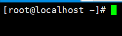
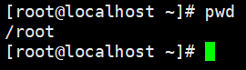
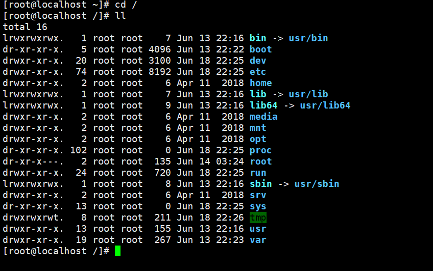
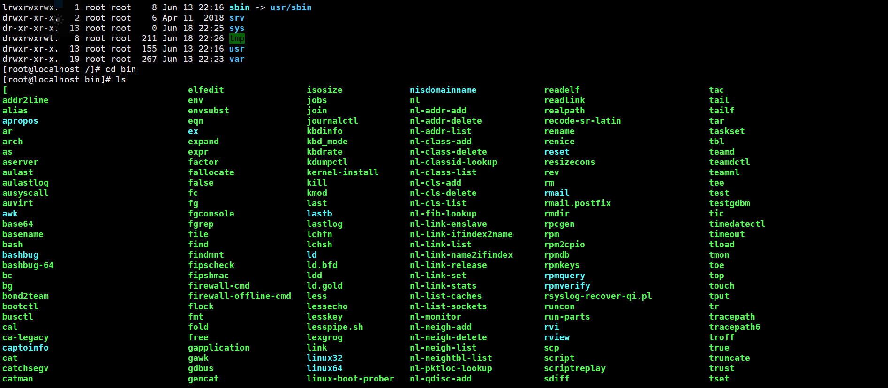
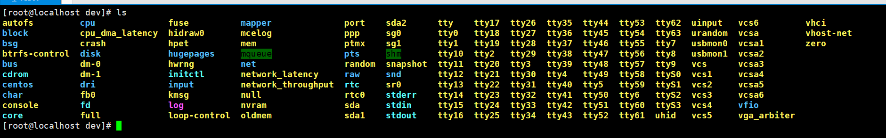

linux根目录
Linux目录

linux窗口左侧边栏中，root表示当前用户名，localhost表示主机名， “~”表示当前用户文件夹(可参考，Windows C:\Users\26918)。
使用”pwd”(对应windows下的chdir)查看当前路径可知，root用户(即管理员用户)的用户文件夹为”/root”，

通常普通用户(如”zzt”)的文件夹位置为 /home/zzt 。
根目录下常用文件夹的作用
使用 “cd /“ 命令可以进入linux根目录，再使用 ll 可以查看当前路径下文件夹或及文件，这些文件夹是Linux系统自带的，有着固定的作用。
其中深蓝色的代表文件夹，如”boot，dev，etc，home”等，浅蓝色的代表快捷方式，如”bin，lib，lib64，sbin”其箭头(->)后面代表的是目标位置。
bin目录
全称binaries
cd bin
进入bin目录，再调用 ls 命令 列出bin目录下内容

可以看到其中大部分字段为绿色，这代表当前内容为 可执行文件 如(‘[‘,elfedit,isosize,readelf等等)。所以我们可以将编辑好的可执行文件存放在 /bin 目录下。
usr目录
/usr 是linux系统核心所在，包含了所有的共享文件，涵盖了二进制文件，各种文档，各种头文件，x，还有各种库文件；还有诸多程序，例如 ftp，telnet 等等。曾作为unix系统的用户目录，会在/usr/someone目录下存放用户相关信息。现已被home目录取代。usr目录全称有两种说法
unix system resources：unix系统资源
unix software resources：unix软件资源
var目录
软件运行所产生的数据存放目录，如日志、数据库文件、缓存文件。(如果内容较多，可单独分区，或与/usr放在同一分区)
etc目录
配置文件
boot目录
系统开机时需要用到的文件。
dev目录
在linux中所有的东西都是以文件的形式存放在 /dev 目录，例如你插入一个鼠标，dev目录下会相应生成一个”鼠标文件”。

列出dev目录下的内容可以看到有许多黄色的字段，这些代表 虚拟设备对应的文件 。
lib目录
函数库包含了/bin或/sbin下的指令会用到的函数库。
lib64目录
与lib类似。
sbin目录
system-only-binaries，仅系统可调用的命令。
media目录
包含了一些可删除设备，一般是系统自动挂载可移除的装置，挂载后装置图标会出现在桌面窗口的左边栏。如软碟、光碟、DVD、U盘。
mnt目录
早期media，与之类似
opt目录
第三方软件目录，建议将自己开发的程序，系统存入此目录。
proc目录
虚拟文件系统，与内核有关
root目录
系统管理员目录
home目录
存放普通用户相关文件，使用 cd ~ 命令可以进入到当前用户目录
即cd ~与cd /home/someone或者cd /root等价。
sys目录
系统常用文件
tmp目录
临时文件